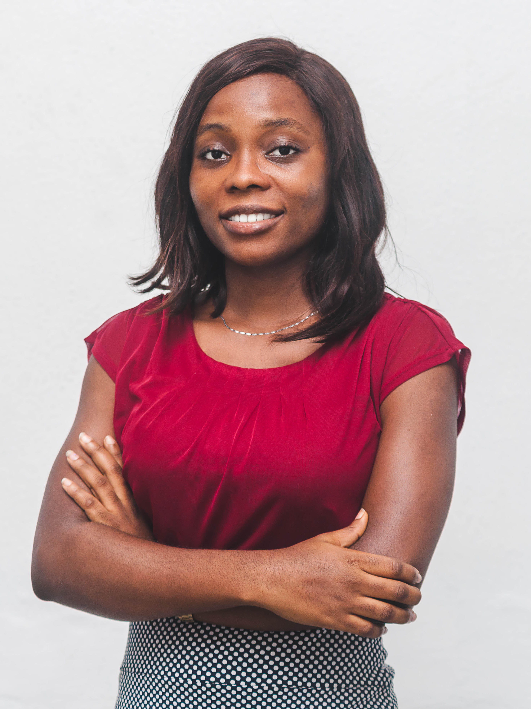

Samiat's Resume

Summary
An experienced machine learning engineer with 3 years of experience in training machine learning models,
deploying these models and maintaining their performance over time. I am also an exceptional team collaborator with excellent communication skills,
and an ability to work independently on complex projects. I am well-versed in the areas of Computer Vision, Natural Language Processing, Big Data Processing,
Information Retrieval and Recommender Systems and my tools of choice are Python, Tensorflow/PyTorch, SQL, and AWS. I am seeking a role where I will be
able to apply cutting-edge artificial intelligence methods to solve hard problems at scale.
WORK EXPERIENCE
Machine Learning Engineer
Tegence AI, Lagos, Nigeria
July 2023 - present
- Utilised pre-trained models to strategically design and implement a machine learning system,
enabling the extraction of facial embeddings from images. Seamlessly integrated this system
with database functionality while pioneering a resilient method for conducting comparative analysis
of embedding similarities, achieving a remarkable accuracy of 97% in embedding comparisons.
- Engineered API routes to facilitate consumption of the face embedding model, enhancing accessibility
and usability within the broader system architecture.
- Utilised the Google OCR API for precise document extraction, employing a systematic regex methodology
to extract pertinent details with a success rate of 95%, effectively enhancing data retrieval from diverse documents.
- Researched, designed and implemented a machine learning model for voice recognition, achieving a commendable accuracy rate of 75%.
Associate Machine Learning Engineer
Prunedge, Lagos, Nigeria
Feb 2021 - Feb 2022
- Collaborated with research engineers in developing a machine learning model (Siamese Network) for determining the similarity
between facial images in a face recognition system used by close to 10 million people.
- Developed and embedded an optical character recognition (OCR) model for document parsing into a mobile application.
- Optimised said OCR system and sped up the recognition process by 62%, applying Tensorflow Lite to shrink the model size.
- Collaborated extensively on other projects with the IoT (Internet of Things), Data Engineering, Data Science, Quality Assurance,
and Software Engineering teams.
- Undertook a mentorship role, guiding a group of 6 interns through challenges and fostering their growth, technical proficiency
and successful project execution.
Machine Learning Intern
Tegence AI, Lagos, Nigeria
Jan 2020 - Jan 2021
- Developed a convolutional neural network model for detecting melanoma skin cancer and achieved a 73% prediction accuracy.
- Worked on the training and development of a noise reduction tool for removing noise from an audio signal and reaching an accuracy of 80%.
- Curated and augmented expansive audio and image datasets, employing a combination of manual annotation and automated extraction techniques.
The enriched datasets substantially elevated the training of recognition and generation models in both audio and image domains, resulting in
marked enhancements in model accuracy and overall performance.
EDUCATION
MSc. Data Science and Artificial Intelligence
Bournemouth University, Bournemouth, United Kingdom.
Jan 2022 – May 2023
Grade: Distinction
BEng. Computer Engineering
Afe Babalola University, Ekiti State, Nigeria.
Sept 2014 – Oct 2019
Grade: Second Class Upper
SKILLS AND INTEREST
Technical skills: Tensorflow, Pytorch, Scikit-learn, Linear Regression, K-Nearest Neighbour, Deep Neural Networks, NLP, Numpy, Pandas, Matplotlib,
Feature engineering, Git, Flask, FastAPI
Soft skills: Research, Collaboration, Communication, Critical thinking, Presentation, Business Problem Understanding
CERTIFICATES, SCHOLARSHIPS AND AWARDS
- Scholarship recipient for Academic Excellence, Bournemouth University, 2022
- Microsoft Certified Azure AI fundamentals , 2021
- Mathematical foundations for machine learning, udemy, 2024
OTHERS
Contact Me
Hobbies